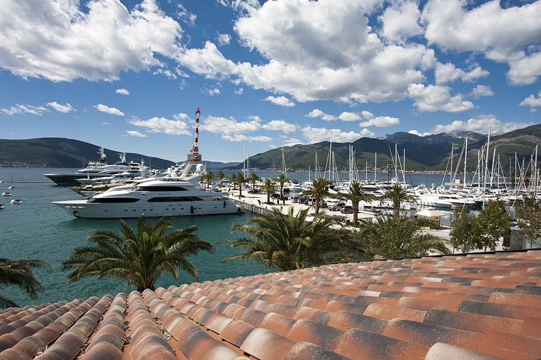

Tivat Travel Guide 2026: Things to Do, Food, Coworking & Day Trips
Tivat is a small coastal town in the Bay of Kotor, best known for the Porto Montenegro super-yacht marina, calm waterfront walks, naval history and easy access to Luštica peninsula and Kotor old town. This is the practical, locally-collected guide for visitors and remote workers in summer 2026 — restaurants, coworking, beaches, the Pine promenade, the cultural calendar and the trips that beat the cruise-ship crowds.

Why visit Tivat instead of Kotor or Budva?
Kotor is the postcard — but it is also one cruise-ship away from a sweaty old-town crawl. Budva is loud, party-led, and high-season-packed. Tivat sits between them: warmer water, longer waterfront, a working airport ten minutes away, more English spoken than anywhere else on the bay, and a noticeably international expat scene. The marina district feels almost Mediterranean-French. Walk away from it for two streets and you are back in a normal Adriatic town with bakeries, kindergartens, and a Wednesday-night promenade culture.
Best things to do in Tivat
- Porto Montenegro marina — walk the boardwalk at sunset (free), one drink at Aperitivo Bar (€7–10), watch the super-yachts.
- Naval Heritage Collection — Yugoslav-era Una-class submarine P-821 Heroj, mini-subs, the original Arsenal Tivat naval history. Inside the marina district. €5. About 45 minutes.
- The Pine Promenade — a 2 km waterfront walk east of the marina toward Krašići. Best at 19:30 in June.
- Old town (Stari Grad) — small, walkable, the church of St Mark (Gospa od Milosti), morning bakeries with hot burek.
- Buća-Luković Summer Residence — a 14th-century Venetian fortified house and chapel in the centre of Tivat, free to visit, used for summer cultural events.
- Plavi Horizonti beach — sandy, family-friendly, on the open-sea side of Luštica peninsula. 25 min by car or boat.
Where to eat in Tivat without overpaying
The honest rule: every step away from the marina boardwalk drops the bill by about 30%, and improves the seafood. Reservations are useful in July–August, almost never needed in June.
| Place | Style | Avg per person | Note |
|---|---|---|---|
| Mala Barka Kalimanjska 2 | Seafood | €15–25 | White-fish carpaccio, grilled octopus, 12:00–23:00. |
| Divino Seafront Šetalište kapetana Iva Vizina 3 | Mediterranean | €20–40 | Sunset terrace, seafood pasta, +382 68 570 594. |
| Mala Bevanda La Pasteria | Italian | €18–30 | Tuna tartare, fresh pasta. Italian-family-run feel. |
| Restoran Hotel Pine | Local | €15–25 | Famous for Pine Pita dessert. Locals' choice. |
| Konoba Grispolis Bigova / Trašta Bay | Seafood konoba | €20–35 | Old fishing village 25 min south. Worth the drive. |
| Vino Santo | Modern Adriatic | €25–45 | Chef Dragan Pej, refined. Tasting menu available. |
Where digital nomads work in Tivat
You have four practical options for remote work in or near Tivat, plus dozens of coffee-shop fall-backs.
- Playworking Coliving — Đuraševići village on Luštica peninsula, 15 minutes from Tivat. 600 Mbps fibre, 7 private rooms, free SUPs and bikes. From €800 per month. 4.5★ across 60+ reviews. See the full digital-nomad guide.
- Shipyard Coworking — independent, occasional events, Tivat town. Message ahead for day-pass rates.
- Innovation Centre Tivat & Innovation Centre Porto Montenegro — government-supported innovation/coworking. Day passes available, programmes sometimes free.
- Cafés that tolerate laptops — Caffe Forte, Square Kafe, Aperitivo Bar (off-peak hours only).
Tivat Cultural Summer & Purgatorije Festival
Tivat's open-air theatre and music festival Purgatorije traditionally runs from mid-June through late summer. Performances happen in the old town square, the Buća-Luković courtyard, and on the waterfront. Tickets €5–15. The full daily programme is published incrementally on the Tivat Tourism Organisation calendar.
Other dated cultural events overlapping summer 2026 (verified at publication):
- 21 June 2026 — Boris Grebenshikov live concert, Tivat Culture Center (major draw for the Russian-speaking community).
- 2–7 July 2026 — Budva Summer Festival, 40 min drive south.
- Fašinada, 22 July 2026 — boat parade and rock-throwing ritual in Perast, 30 min from Tivat.
Beaches near Tivat — and which to skip
Beaches inside Tivat itself are small and largely concreted-over. The good swim spots are 15–35 minutes away on Luštica peninsula, open to anyone.
- Plavi Horizonti — sandy bay, families. 25 min drive.
- Žanjic — pebble cove, very clear water, café on the beach. 35 min drive or 15 min by boat.
- Mirišta — smaller, next to Žanjic, calmer.
- Pržno (Krašići) — close to Tivat, walking-distance from the Pine promenade.
- Skip — the central Tivat beach in front of Porto Montenegro. Decorative, not for swimming.
Day trips from Tivat — distances and times
| Destination | By car | By bus / boat | What you go for |
|---|---|---|---|
| Kotor old town | 20 min | 30 min bus, €2 | UNESCO walls, fortress, evening atmosphere |
| Perast & Our Lady of the Rocks | 30 min | 40 min bus + €5 boat | Baroque town, islet church |
| Luštica beaches (Žanjic, Mirišta) | 35 min | 15 min by boat | Clear-water swim, lunch by the sea |
| Blue Cave | — | 1.5–3 h boat tour | Sea cave, sub tunnels, Mamula |
| Lovćen + Njeguši + Cetinje | 1 h 15 | — | Mountain serpentine, mausoleum, pršut |
| Skadar Lake (Virpazar) | 1 h 30 | — | Boat trip, wine tasting |
| Ostrog Monastery | 2 h | — | White cliff monastery, pilgrimage site |
| Durmitor & Tara Canyon | 3 h 30 | — | Alpine north, Black Lake, rafting |
Tivat Airport — what to know
Tivat Airport (TIV) is a 5-minute drive from the town centre. In high season it serves direct flights to most European capitals. Outside high season the schedule shrinks. Taxis to Tivat town €5–10, to Kotor €15, to Budva €25. Most colivings (including Playworking) offer free airport pickup. The runway sits dramatically between the bay and the mountains — window seats love it.
How much does Tivat cost in 2026?
- Coffee at a local café — €1.50–2.50
- Coffee at Porto Montenegro — €3.50–5
- Sit-down dinner at a local konoba — €15–25/person
- Sit-down dinner at Porto Montenegro — €30–60/person
- One-bed apartment for a month — €600–1000 (June), €1000–1800 (July–August)
- Coliving room — from €800/month
- Local SIM with 30 GB — €10–15
- Local taxi (in town) — €5–8
Tivat — common tourist traps
- Airport taxis overcharge non-Montenegrin travellers if you do not pre-book. Use a coliving pickup or agree the price before getting in.
- Marina restaurants charge a premium for the view. The food is fine; it is not better than the local konobas.
- Souvenir shops on the boardwalk sell mostly Chinese-imported items. Buy olive oil and ceramics from Luštica family farms or Kotor old-town craft shops instead.
- Boat-tour touts at the marina mark up Blue-Cave trips by 25–30%. Book direct with operators from Kotor for the same boat.
Frequently asked questions
Is Tivat worth visiting in Montenegro?
Yes, especially as a base. Tivat has a calm waterfront, the Porto Montenegro marina, easy access to Kotor (20 min) and Luštica (15 min), a small old town and the Naval Heritage Collection. It is the most international and English-friendly town in the Bay of Kotor.
How many days do you need in Tivat?
For a coastal trip, 2 to 3 days is enough to see Tivat itself. As a base for a longer Bay of Kotor stay, 7 to 21 days works well — you can day-trip to Kotor, Perast, Luštica beaches, Lovćen, Skadar Lake and even Durmitor without ever changing accommodation.
Where to eat in Tivat without overpaying?
Move off the Porto Montenegro boardwalk. Mala Barka (Kalimanjska 2) does fresh seafood for €15 to €25. Restoran Hotel Pine is loved by locals for Pine Pita dessert. Divino sits between marina prices and local prices for sea-view Mediterranean dinners.
Can digital nomads work from Tivat?
Yes. Internet on the coast averages 80 to 200 Mbps. You can choose Playworking coliving on Luštica (15 min away, 600 Mbps), Innovation Centre Tivat, Innovation Centre Porto Montenegro, or independent Shipyard Coworking. Day-pass rates are typically €8 to €20.
How do I get from Tivat to Kotor?
The Bay-Kotor road takes 20 minutes by car or taxi (€10 to €15). Buses run every 30 minutes for €2. The road hugs the bay, so the drive itself is part of the experience.
When is the best time to visit Tivat?
Mid-May to late June, and again September. July and August are hot and packed; April and early May can be cool. The water is warm enough for swimming from late May through October.
Is English widely spoken in Tivat?
Yes. Tivat is the most English-friendly town on the Montenegrin coast. Russian is also very common since 2022. Younger locals usually speak both, hospitality staff almost always speak English.
Is Tivat safe for solo female travellers?
Yes. Montenegro is generally one of the safest countries in the Balkans for solo female travel. Petty crime is rare, harassment is uncommon, and walking the Pine promenade alone in the evening is normal local behaviour.